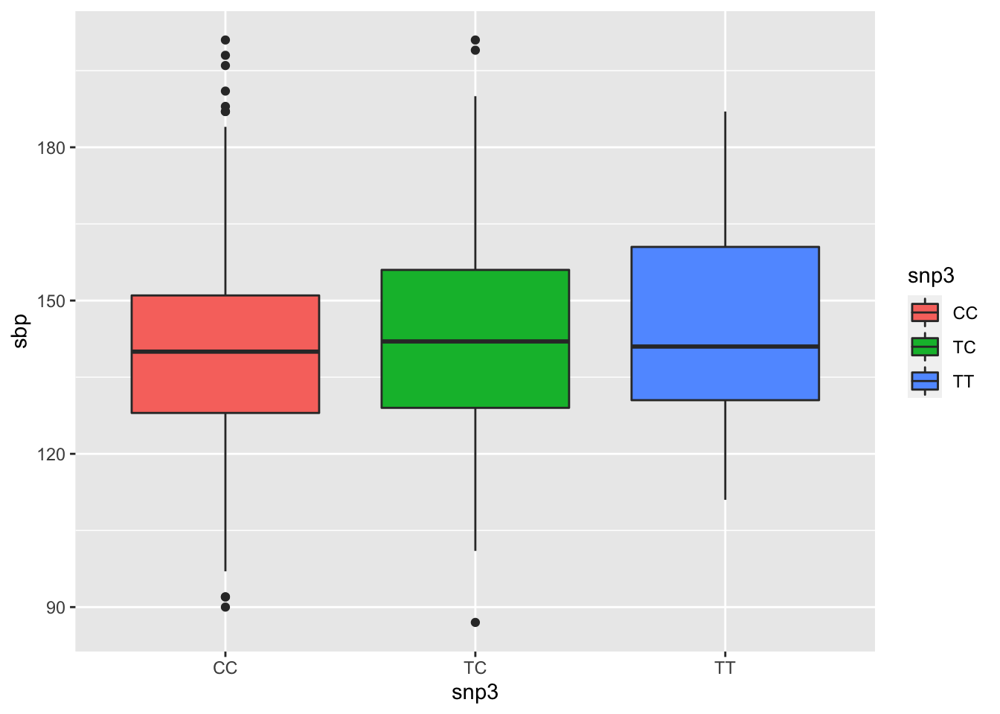

Last updated: 2022-07-25
Checks: 7 0
Knit directory:
SISG2022_Association_Mapping/
This reproducible R Markdown analysis was created with workflowr (version 1.7.0). The Checks tab describes the reproducibility checks that were applied when the results were created. The Past versions tab lists the development history.
Great! Since the R Markdown file has been committed to the Git repository, you know the exact version of the code that produced these results.
Great job! The global environment was empty. Objects defined in the global environment can affect the analysis in your R Markdown file in unknown ways. For reproduciblity it’s best to always run the code in an empty environment.
The command set.seed(20220530) was run prior to running
the code in the R Markdown file. Setting a seed ensures that any results
that rely on randomness, e.g. subsampling or permutations, are
reproducible.
Great job! Recording the operating system, R version, and package versions is critical for reproducibility.
Nice! There were no cached chunks for this analysis, so you can be confident that you successfully produced the results during this run.
Great job! Using relative paths to the files within your workflowr project makes it easier to run your code on other machines.
Great! You are using Git for version control. Tracking code development and connecting the code version to the results is critical for reproducibility.
The results in this page were generated with repository version ef4b6bf. See the Past versions tab to see a history of the changes made to the R Markdown and HTML files.
Note that you need to be careful to ensure that all relevant files for
the analysis have been committed to Git prior to generating the results
(you can use wflow_publish or
wflow_git_commit). workflowr only checks the R Markdown
file, but you know if there are other scripts or data files that it
depends on. Below is the status of the Git repository when the results
were generated:
Ignored files:
Ignored: .DS_Store
Ignored: analysis/.Rhistory
Ignored: code/.Rhistory
Ignored: data/.DS_Store
Ignored: lectures/.DS_Store
Untracked files:
Untracked: analysis/Session02_practical_Key.Rmd
Untracked: analysis/Session03_practical_Key.Rmd
Untracked: analysis/Session07_practical_Key.Rmd
Untracked: analysis/Session08_practical_Key.Rmd
Note that any generated files, e.g. HTML, png, CSS, etc., are not included in this status report because it is ok for generated content to have uncommitted changes.
These are the previous versions of the repository in which changes were
made to the R Markdown
(analysis/Session01_practical_Key.Rmd) and HTML
(docs/Session01_practical_Key.html) files. If you’ve
configured a remote Git repository (see ?wflow_git_remote),
click on the hyperlinks in the table below to view the files as they
were in that past version.
| File | Version | Author | Date | Message |
|---|---|---|---|---|
| Rmd | ef4b6bf | Joelle Mbatchou | 2022-07-25 | add key |
| html | 0999600 | Joelle Mbatchou | 2022-07-25 | Build site. |
| Rmd | 1c5a6de | Joelle Mbatchou | 2022-07-25 | add key |
Before you begin:
data.table and
dplyr libraryrequire(data.table)
require(dplyr)
require(tidyr)
require(ggplot2)We will be using the LHON dataset covered in the lecture notes for this portion of the exercises. The LHON dataset is from a case-control study and includes both phenotype and genotype data for a candidate gene.
Let’s first load the LHON data file into the R session. You can read the file directly from the web (if you are connected to the web) using the following command:
LHON.df <- fread("https://raw.githubusercontent.com/joellembatchou/SISG2022_Association_Mapping/master/data/LHON.txt", header=TRUE)Alternatively, you can save the file to your computer and read it into R from the directory where the file is located:
LHON.df <- fread("LHON.txt", header=TRUE)Here are some things to look at:
# Each row is a sample
LHON.df %>%
head IID GENO PHENO
1: ID1 TT CONTROL
2: ID2 CT CONTROL
3: ID3 TT CASE
4: ID4 CT CONTROL
5: ID5 TT CONTROL
6: ID6 TT CONTROL# Character variables
LHON.df %>%
strClasses 'data.table' and 'data.frame': 328 obs. of 3 variables:
$ IID : chr "ID1" "ID2" "ID3" "ID4" ...
$ GENO : chr "TT" "CT" "TT" "CT" ...
$ PHENO: chr "CONTROL" "CONTROL" "CASE" "CONTROL" ...
- attr(*, ".internal.selfref")=<externalptr> LHON.df %>%
nrow[1] 328LHON.df %>% select(PHENO) %>% table.
CASE CONTROL
89 239 LHON.df %>%
select(PHENO, GENO) %>%
table GENO
PHENO CC CT TT
CASE 6 8 75
CONTROL 10 66 163LHON.df %>%
group_by(PHENO) %>%
summarize(
n.C = 2 * sum(GENO == "CC") + 1 * sum(GENO == "CT"),
n.T = 2 * sum(GENO == "TT") + 1 * sum(GENO == "CT")
)# A tibble: 2 × 3
PHENO n.C n.T
<chr> <dbl> <dbl>
1 CASE 20 158
2 CONTROL 86 392CC as the reference genotype using the glm()
function. (Hint: make sure to convert the phenotype to a binary 0/1
variable)LHON.df <- LHON.df %>%
mutate(
PHENO.bin = as.numeric(PHENO == "CASE"),
GENO.factor = factor(GENO, levels = c("CC", "CT", "TT"))
)
log.model <- glm(PHENO.bin ~ GENO.factor, data = LHON.df, family = binomial(link = "logit")) View summary information from the fitted model, including coefficient estimates, standard errors and p-values.
log.model %>% summary
Call:
glm(formula = PHENO.bin ~ GENO.factor, family = binomial(link = "logit"),
data = LHON.df)
Deviance Residuals:
Min 1Q Median 3Q Max
-0.9695 -0.8701 -0.8701 1.5197 2.1093
Coefficients:
Estimate Std. Error z value Pr(>|z|)
(Intercept) -0.5108 0.5164 -0.989 0.3226
GENO.factorCT -1.5994 0.6378 -2.508 0.0122 *
GENO.factorTT -0.2654 0.5349 -0.496 0.6197
---
Signif. codes: 0 '***' 0.001 '**' 0.01 '*' 0.05 '.' 0.1 ' ' 1
(Dispersion parameter for binomial family taken to be 1)
Null deviance: 383.49 on 327 degrees of freedom
Residual deviance: 368.48 on 325 degrees of freedom
AIC: 374.48
Number of Fisher Scoring iterations: 4CT
and TT genotypes relative to the CC reference
genotype. Interpret.# OR for CT and TT
log.model %>% coef %>% exp (Intercept) GENO.factorCT GENO.factorTT
0.6000000 0.2020202 0.7668712 # CI for CT
exp( -1.5994 + c(-1,1) * 1.96 * 0.6378)[1] 0.05787394 0.70517308# CI for TT
exp( -0.2654 + c(-1,1) * 1.96 * 0.5349)[1] 0.2687956 2.1880353confint.default()confint.default(log.model) %>% exp 2.5 % 97.5 %
(Intercept) 0.21806837 1.650858
GENO.factorCT 0.05787424 0.705187
GENO.factorTT 0.26878265 2.187981CT and TT genotypes (compared to
CC)?Check the p-values.
Extra: 5. Perform the logistic regression analysis with the additive genotype coding. Obtain odds ratios and confidence intervals. Is there evidence of an association? How does it compare with the 2-parameter model?
LHON.df <- LHON.df %>%
mutate(
GENO.num = 0 + 1 * (GENO == "CT") + 2 * (GENO == "TT")
)
log.model.add <- glm(PHENO.bin ~ GENO.num, data = LHON.df, family = binomial(link = "logit"))
log.model.add %>% summary
Call:
glm(formula = PHENO.bin ~ GENO.num, family = binomial(link = "logit"),
data = LHON.df)
Deviance Residuals:
Min 1Q Median 3Q Max
-0.8436 -0.8436 -0.6854 1.5531 1.9797
Coefficients:
Estimate Std. Error z value Pr(>|z|)
(Intercept) -1.8077 0.4554 -3.970 7.2e-05 ***
GENO.num 0.4787 0.2505 1.911 0.0559 .
---
Signif. codes: 0 '***' 0.001 '**' 0.01 '*' 0.05 '.' 0.1 ' ' 1
(Dispersion parameter for binomial family taken to be 1)
Null deviance: 383.49 on 327 degrees of freedom
Residual deviance: 379.47 on 326 degrees of freedom
AIC: 383.47
Number of Fisher Scoring iterations: 4log.model.add %>% coef %>% exp(Intercept) GENO.num
0.1640322 1.6140439 confint.default(log.model.add) %>% exp 2.5 % 97.5 %
(Intercept) 0.06718883 0.4004616
GENO.num 0.98792490 2.6369796We will be using the Blood Pressure dataset for this portion of the exercises. This dataset contains diastolic and systolic blood pressure measurements for 1000 individuals, and genotype data at 11 SNPs in a candidate gene for blood pressure. Covariates such as gender (sex) and body mass index (bmi) are included as well.
Let’s first load the file into R. You can read the file directly from the web (if you are connected to the web) using the following command:
BP.df <- fread("https://raw.githubusercontent.com/joellembatchou/SISG2022_Association_Mapping/master/data/bpdata.csv", header=TRUE)Alternatively, you can save the file to your computer and read it into R from the directory where the file is located:
BP.df <- fread("bpdata.csv", header=TRUE)Let’s take a look at the dataset:
BP.df %>% head V1 sex sbp dbp snp1 snp2 snp3 snp4 snp5 snp6 snp7 snp8 snp9 snp10 snp11
1: 1 FEMALE 171 89 CC TT TT TT CC GG AA TT TT CC TT
2: 2 MALE 160 99 TT TT CC <NA> CC AG AT CC CT CC CT
3: 3 FEMALE 142 83 CT TT TC CT CC AG TT CC TT CT TT
4: 4 MALE 126 71 CT TT CC <NA> CC AA TT CC TT CT CT
5: 5 FEMALE 126 82 CT TT CC CC CC AA TT CC TT CT CT
6: 6 FEMALE 132 89 CT TT CC CC CC <NA> TT CC TT TT CT
bmi
1: 25
2: 35
3: 34
4: 32
5: 34
6: 25BP.df %>% strClasses 'data.table' and 'data.frame': 1000 obs. of 16 variables:
$ V1 : int 1 2 3 4 5 6 7 8 9 10 ...
$ sex : chr "FEMALE" "MALE" "FEMALE" "MALE" ...
$ sbp : int 171 160 142 126 126 132 136 121 120 136 ...
$ dbp : int 89 99 83 71 82 89 58 87 69 88 ...
$ snp1 : chr "CC" "TT" "CT" "CT" ...
$ snp2 : chr "TT" "TT" "TT" "TT" ...
$ snp3 : chr "TT" "CC" "TC" "CC" ...
$ snp4 : chr "TT" NA "CT" NA ...
$ snp5 : chr "CC" "CC" "CC" "CC" ...
$ snp6 : chr "GG" "AG" "AG" "AA" ...
$ snp7 : chr "AA" "AT" "TT" "TT" ...
$ snp8 : chr "TT" "CC" "CC" "CC" ...
$ snp9 : chr "TT" "CT" "TT" "TT" ...
$ snp10: chr "CC" "CC" "CT" "CT" ...
$ snp11: chr "TT" "CT" "TT" "CT" ...
$ bmi : int 25 35 34 32 34 25 22 33 21 29 ...
- attr(*, ".internal.selfref")=<externalptr> sbp) on SNP3 using the lm()
function. Compare the estimates, confidence intervals and p-values you
get.T
alleleBP.df %>% select(snp3) %>% table.
CC TC TT
621 304 35 BP.df <- BP.df %>%
mutate(snp3.add = 1 * (snp3 == "TC") + 2 * (snp3 == "TT"))
lm.add <- lm(sbp ~ snp3.add, data = BP.df)
lm.add %>% summary
Call:
lm(formula = sbp ~ snp3.add, data = BP.df)
Residuals:
Min 1Q Median 3Q Max
-55.974 -12.418 -0.974 10.582 60.582
Coefficients:
Estimate Std. Error t value Pr(>|t|)
(Intercept) 140.4179 0.7219 194.506 <2e-16 ***
snp3.add 2.5556 1.0615 2.407 0.0163 *
---
Signif. codes: 0 '***' 0.001 '**' 0.01 '*' 0.05 '.' 0.1 ' ' 1
Residual standard error: 18.33 on 958 degrees of freedom
(40 observations deleted due to missingness)
Multiple R-squared: 0.006014, Adjusted R-squared: 0.004976
F-statistic: 5.796 on 1 and 958 DF, p-value: 0.01625lm.add %>% confint.default 2.5 % 97.5 %
(Intercept) 139.0029685 141.832849
snp3.add 0.4750661 4.636205Let’s check how it compares when we count the number of
C alleles.
BP.df <- BP.df %>%
mutate(snp3.add.C = 1 * (snp3 == "TC") + 2 * (snp3 == "CC"))
lm.add.C <- lm(sbp ~ snp3.add.C, data = BP.df)
lm.add.C %>% summary
Call:
lm(formula = sbp ~ snp3.add.C, data = BP.df)
Residuals:
Min 1Q Median 3Q Max
-55.974 -12.418 -0.974 10.582 60.582
Coefficients:
Estimate Std. Error t value Pr(>|t|)
(Intercept) 145.529 1.809 80.446 <2e-16 ***
snp3.add.C -2.556 1.062 -2.407 0.0163 *
---
Signif. codes: 0 '***' 0.001 '**' 0.01 '*' 0.05 '.' 0.1 ' ' 1
Residual standard error: 18.33 on 958 degrees of freedom
(40 observations deleted due to missingness)
Multiple R-squared: 0.006014, Adjusted R-squared: 0.004976
F-statistic: 5.796 on 1 and 958 DF, p-value: 0.01625T allele)BP.df <- BP.df %>%
mutate(snp3.dom = 1 * (snp3 == "TC" | snp3 == "TT"))
BP.df %>% select(snp3.dom, snp3) %>% table snp3
snp3.dom CC TC TT
0 621 0 0
1 0 304 35lm.dom <- lm(sbp ~ snp3.dom, data = BP.df)
lm.dom %>% summary
Call:
lm(formula = sbp ~ snp3.dom, data = BP.df)
Residuals:
Min 1Q Median 3Q Max
-56.218 -12.428 -0.823 10.572 60.572
Coefficients:
Estimate Std. Error t value Pr(>|t|)
(Intercept) 140.428 0.736 190.801 <2e-16 ***
snp3.dom 2.790 1.238 2.253 0.0245 *
---
Signif. codes: 0 '***' 0.001 '**' 0.01 '*' 0.05 '.' 0.1 ' ' 1
Residual standard error: 18.34 on 958 degrees of freedom
(40 observations deleted due to missingness)
Multiple R-squared: 0.005269, Adjusted R-squared: 0.00423
F-statistic: 5.074 on 1 and 958 DF, p-value: 0.02451lm.dom %>% confint.default 2.5 % 97.5 %
(Intercept) 138.9858186 141.870864
snp3.dom 0.3624521 5.217443T allele)BP.df <- BP.df %>%
mutate(snp3.rec = 1 * (snp3 == "TT"))
BP.df %>% select(snp3.rec, snp3) %>% table snp3
snp3.rec CC TC TT
0 621 304 0
1 0 0 35lm.rec <- lm(sbp ~ snp3.rec, data = BP.df)
lm.rec %>% summary
Call:
lm(formula = sbp ~ snp3.rec, data = BP.df)
Residuals:
Min 1Q Median 3Q Max
-54.251 -12.501 -1.251 10.749 59.749
Coefficients:
Estimate Std. Error t value Pr(>|t|)
(Intercept) 141.251 0.604 233.854 <2e-16 ***
snp3.rec 4.463 3.163 1.411 0.159
---
Signif. codes: 0 '***' 0.001 '**' 0.01 '*' 0.05 '.' 0.1 ' ' 1
Residual standard error: 18.37 on 958 degrees of freedom
(40 observations deleted due to missingness)
Multiple R-squared: 0.002074, Adjusted R-squared: 0.001032
F-statistic: 1.991 on 1 and 958 DF, p-value: 0.1586lm.rec %>% confint.default 2.5 % 97.5 %
(Intercept) 140.06697 142.43465
snp3.rec -1.73658 10.66353lm.rec <- lm(sbp ~ snp3, data = BP.df)
lm.rec %>% summary
Call:
lm(formula = sbp ~ snp3, data = BP.df)
Residuals:
Min 1Q Median 3Q Max
-55.931 -12.428 -0.931 10.572 60.572
Coefficients:
Estimate Std. Error t value Pr(>|t|)
(Intercept) 140.4283 0.7361 190.773 <2e-16 ***
snp3TC 2.5026 1.2840 1.949 0.0516 .
snp3TT 5.2859 3.1868 1.659 0.0975 .
---
Signif. codes: 0 '***' 0.001 '**' 0.01 '*' 0.05 '.' 0.1 ' ' 1
Residual standard error: 18.34 on 957 degrees of freedom
(40 observations deleted due to missingness)
Multiple R-squared: 0.006019, Adjusted R-squared: 0.003942
F-statistic: 2.898 on 2 and 957 DF, p-value: 0.05563lm.rec %>% confint.default 2.5 % 97.5 %
(Intercept) 138.98560975 141.871073
snp3TC -0.01405184 5.019211
snp3TT -0.96007686 11.531966BP.df %>%
drop_na(snp3) %>%
ggplot(aes(x = snp3, y = sbp, fill = snp3)) +
geom_boxplot()
| Version | Author | Date |
|---|---|---|
| 0999600 | Joelle Mbatchou | 2022-07-25 |
For question 3 and 4 below, R also has a ‘formula’ syntax, frequently
used when specifying regression models with many predictors. To regress
an outcome y on several covariates, the syntax is:
outcome ~ covariate1 + covariate2 + covariate3sbp from
question 1 for the additive model, but this time adjust for
sex and bmi. Do the results change?lm(sbp ~ snp3.add + sex + bmi, data = BP.df) %>% summary
Call:
lm(formula = sbp ~ snp3.add + sex + bmi, data = BP.df)
Residuals:
Min 1Q Median 3Q Max
-58.83 -12.81 -0.82 11.58 57.80
Coefficients:
Estimate Std. Error t value Pr(>|t|)
(Intercept) 145.85380 3.00271 48.574 < 2e-16 ***
snp3.add 2.63566 1.05434 2.500 0.0126 *
sexMALE -4.77580 1.17642 -4.060 5.32e-05 ***
bmi -0.09837 0.09481 -1.038 0.2997
---
Signif. codes: 0 '***' 0.001 '**' 0.01 '*' 0.05 '.' 0.1 ' ' 1
Residual standard error: 18.19 on 955 degrees of freedom
(41 observations deleted due to missingness)
Multiple R-squared: 0.02402, Adjusted R-squared: 0.02096
F-statistic: 7.836 on 3 and 955 DF, p-value: 3.608e-05sbp is explained
by all of the 11 SNPs together? lm(sbp ~ snp1+snp2+snp3+snp4+snp5+snp6+snp7+snp8+snp9+snp10+snp11, data = BP.df) %>% summary
Call:
lm(formula = sbp ~ snp1 + snp2 + snp3 + snp4 + snp5 + snp6 +
snp7 + snp8 + snp9 + snp10 + snp11, data = BP.df)
Residuals:
Min 1Q Median 3Q Max
-50.722 -11.967 -0.703 11.021 61.704
Coefficients:
Estimate Std. Error t value Pr(>|t|)
(Intercept) 133.1726 12.4033 10.737 <2e-16 ***
snp1CT -1.7048 4.5991 -0.371 0.711
snp1TT 1.9319 8.2839 0.233 0.816
snp2AT 0.7347 5.5923 0.131 0.896
snp2TT -0.5118 6.9317 -0.074 0.941
snp3TC 4.7672 5.0211 0.949 0.343
snp3TT 6.6913 9.7904 0.683 0.495
snp4CT -0.4778 3.5501 -0.135 0.893
snp4TT 2.3431 6.4874 0.361 0.718
snp5CT 1.1896 3.0462 0.391 0.696
snp5TT -2.2787 7.5490 -0.302 0.763
snp6AG -3.0266 2.0697 -1.462 0.144
snp6GG 2.1230 4.6650 0.455 0.649
snp7AT -3.0873 3.9148 -0.789 0.431
snp7TT -2.6319 4.3146 -0.610 0.542
snp8CT -1.5509 3.6318 -0.427 0.669
snp8TT -2.5507 7.3228 -0.348 0.728
snp9CT 6.0693 7.6170 0.797 0.426
snp9TT 4.7385 7.4517 0.636 0.525
snp10CT 1.4330 1.6466 0.870 0.384
snp10TT 1.9810 2.0699 0.957 0.339
snp11CT 4.8005 6.5175 0.737 0.462
snp11TT 4.0226 9.2775 0.434 0.665
---
Signif. codes: 0 '***' 0.001 '**' 0.01 '*' 0.05 '.' 0.1 ' ' 1
Residual standard error: 18.2 on 707 degrees of freedom
(270 observations deleted due to missingness)
Multiple R-squared: 0.02633, Adjusted R-squared: -0.003965
F-statistic: 0.8691 on 22 and 707 DF, p-value: 0.6372Let’s check the model if we had used additive coding for all SNPs.
# all allele combinations: C/T, A/T, A/G
BP.df %>% select(snp1:snp11) %>% unlist %>% table.
AA AG AT CC CT GG TC TT
636 335 666 2874 2276 73 304 3428 BP.df %>%
mutate(across(
snp1:snp11,
function(snp) { 1 * (snp == "TC" | snp == "CT" | snp == "AT" | snp == "AG") + 2 * (snp == "TT" | snp == "GG")}
)) %>%
lm(sbp ~ snp1+snp2+snp3+snp4+snp5+snp6+snp7+snp8+snp9+snp10+snp11, data = .) %>%
summary
Call:
lm(formula = sbp ~ snp1 + snp2 + snp3 + snp4 + snp5 + snp6 +
snp7 + snp8 + snp9 + snp10 + snp11, data = .)
Residuals:
Min 1Q Median 3Q Max
-53.638 -12.849 -0.522 11.032 61.683
Coefficients:
Estimate Std. Error t value Pr(>|t|)
(Intercept) 137.36286 9.09141 15.109 <2e-16 ***
snp1 1.88456 4.03838 0.467 0.641
snp2 -1.95639 2.96674 -0.659 0.510
snp3 4.60730 4.65652 0.989 0.323
snp4 0.05946 3.11138 0.019 0.985
snp5 -0.26494 2.58719 -0.102 0.918
snp6 -1.17284 1.80185 -0.651 0.515
snp7 -0.28939 1.78362 -0.162 0.871
snp8 0.70702 2.78030 0.254 0.799
snp9 2.17197 2.54774 0.853 0.394
snp10 0.60685 1.01229 0.599 0.549
snp11 -0.39009 4.15347 -0.094 0.925
---
Signif. codes: 0 '***' 0.001 '**' 0.01 '*' 0.05 '.' 0.1 ' ' 1
Residual standard error: 18.17 on 718 degrees of freedom
(270 observations deleted due to missingness)
Multiple R-squared: 0.01418, Adjusted R-squared: -0.0009268
F-statistic: 0.9386 on 11 and 718 DF, p-value: 0.5022
sessionInfo()R version 3.6.1 (2019-07-05)
Platform: x86_64-apple-darwin15.6.0 (64-bit)
Running under: macOS 10.16
Matrix products: default
BLAS: /Library/Frameworks/R.framework/Versions/3.6/Resources/lib/libRblas.0.dylib
LAPACK: /Library/Frameworks/R.framework/Versions/3.6/Resources/lib/libRlapack.dylib
locale:
[1] en_US.UTF-8/en_US.UTF-8/en_US.UTF-8/C/en_US.UTF-8/en_US.UTF-8
attached base packages:
[1] stats graphics grDevices utils datasets methods base
other attached packages:
[1] ggplot2_3.3.3 tidyr_1.0.2 dplyr_1.0.8 data.table_1.13.2
[5] workflowr_1.7.0
loaded via a namespace (and not attached):
[1] tidyselect_1.1.1 xfun_0.31 bslib_0.3.1 purrr_0.3.3
[5] colorspace_2.0-0 vctrs_0.3.8 generics_0.0.2 htmltools_0.5.2
[9] yaml_2.2.1 utf8_1.1.4 rlang_1.0.4 later_1.3.0
[13] pillar_1.7.0 jquerylib_0.1.4 glue_1.6.1 withr_2.5.0
[17] lifecycle_1.0.1 stringr_1.4.0 munsell_0.5.0 gtable_0.3.0
[21] evaluate_0.15 labeling_0.4.2 knitr_1.39 callr_3.7.0
[25] fastmap_1.1.0 httpuv_1.6.5 ps_1.7.0 curl_4.3
[29] fansi_0.4.1 highr_0.8 Rcpp_1.0.8.3 promises_1.2.0.1
[33] scales_1.1.1 jsonlite_1.7.2 farver_2.0.3 fs_1.5.2
[37] digest_0.6.25 stringi_1.4.6 processx_3.5.3 getPass_0.2-2
[41] rprojroot_2.0.3 grid_3.6.1 cli_3.1.1 tools_3.6.1
[45] magrittr_1.5 sass_0.4.0 tibble_3.1.6 crayon_1.3.4
[49] whisker_0.4 pkgconfig_2.0.3 ellipsis_0.3.2 rmarkdown_2.14
[53] httr_1.4.3 rstudioapi_0.13 R6_2.4.1 git2r_0.30.1
[57] compiler_3.6.1